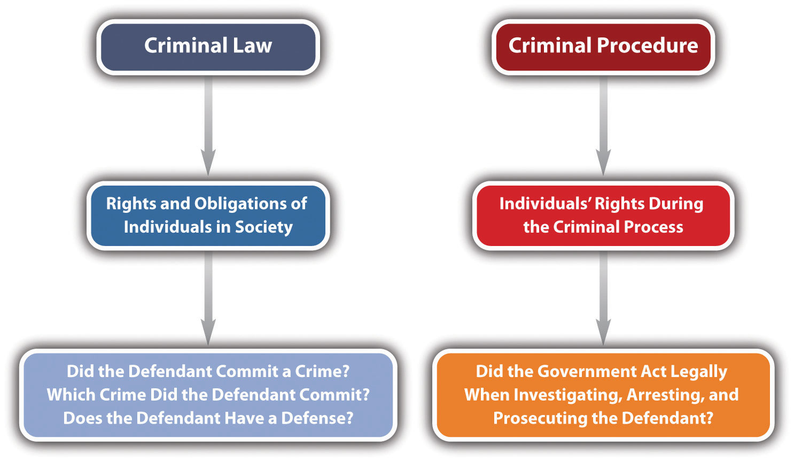
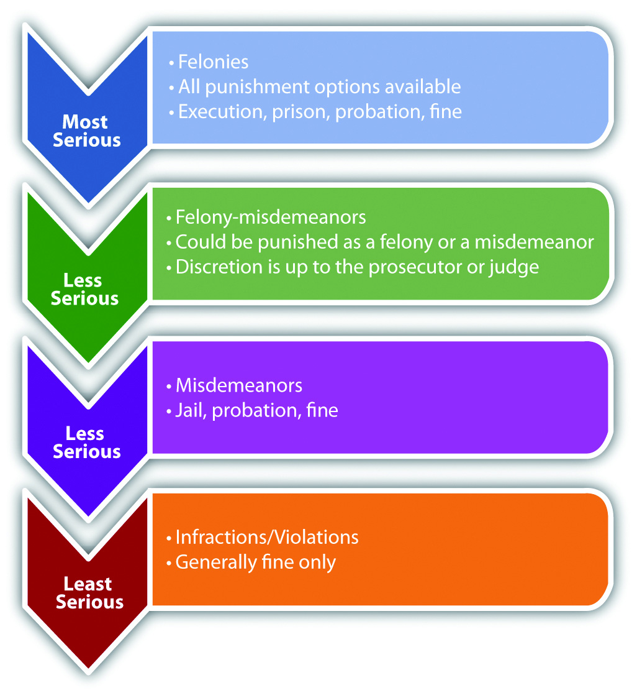
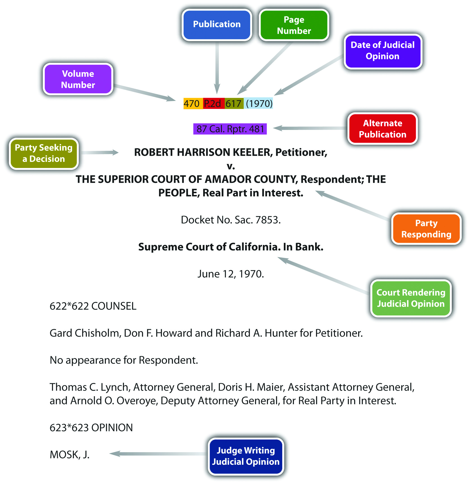
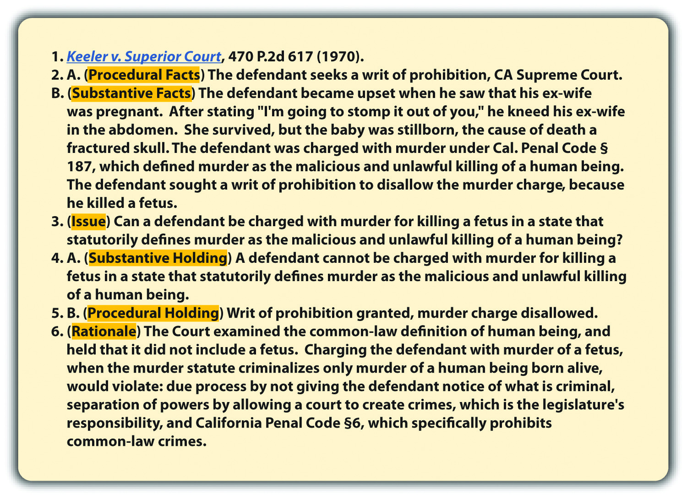

Source: Image courtesy of Tara Storm.
Elementary notions of fairness enshrined in our constitutional jurisprudence dictate that a person receive fair notice not only of the conduct that will subject him to punishment but also of the severity of the penalty that a State may impose.
BMW of North America, Inc. v. Gore, cited in Section 1 "Damages"
This textbook introduces you to our legal system in the United States, the basic elements of a crime, the specific elements of commonly encountered crimes, and most criminal defenses. Criminal law always involves the government and government action, so you will also review the pertinent sections of the United States Constitution and its principles as they apply to criminal law. By the end of the book, you will be comfortable with the legal framework that governs the careers of criminal justice professionals.
Let’s begin at the beginning by defining a crimeAn act committed in violation of a law prohibiting it or omitted in violation of a law ordering it.. The most basic definition of a crime is “an act committed in violation of a law prohibiting it, or omitted in violation of a law ordering it.”Yourdictionary.com, “Definition of Crime,” accessed August 15, 2010, http://www.yourdictionary.com/crime. You learn about criminal act and omission to act in Chapter 4 "The Elements of a Crime". For now, it is important to understand that criminal act, omission to act, and criminal intent are elements or parts of every crime. Illegality is also an element of every crime. Generally, the government must enact a criminal law specifying a crime and its elements before it can punish an individual for criminal behavior. Criminal laws are the primary focus of this book. As you slowly start to build your knowledge and understanding of criminal law, you will notice some unique characteristics of the United States’ legal system.
Laws differ significantly from state to state. Throughout the United States, each state and the federal government criminalize different behaviors. Although this plethora of laws makes American legal studies more complicated for teachers and students, the size, cultural makeup, and geographic variety of our country demand this type of legal system.
Laws in a democratic society, unlike laws of nature, are created by people and are founded in religious, cultural, and historical value systems. People from varying backgrounds live in different regions of this country. Thus you will see that different people enact distinct laws that best suit their needs. This book is intended for use in all states. However, the bulk of any criminal law overview is an examination of different crimes and their elements. To be accurate and representative, this book focuses on general principles that many states follow and provides frequent references to specific state laws for illustrative purposes. Always check the most current version of your state’s law because it may vary from the law presented in this book.
Laws are not static. As society changes, so do the laws that govern behavior. Evolving value systems naturally lead to new laws and regulations supporting modern beliefs. Although a certain stability is essential to the enforcement of rules, occasionally the rules must change.
Try to maintain an open mind when reviewing the different and often contradictory laws set forth in this book. Law is not exact, like science or math. Also try to become comfortable with the gray area, rather than viewing situations as black or white.
Answer the following question. Check your answer using the answer key at the end of the chapter.
This book focuses on criminal lawA body of law defining the rights and obligations of individuals in society., but it occasionally touches on issues of criminal procedureA body of law relating to the enforcement of individuals’ rights during the criminal process., so it is important to differentiate between the two.
Criminal law generally defines the rights and obligations of individuals in society. Some common issues in criminal law are the elements of specific crimes and the elements of various criminal defenses. Criminal procedure generally concerns the enforcement of individuals’ rights during the criminal process. Examples of procedural issues are individuals’ rights during law enforcement investigation, arrest, filing of charges, trial, and appeal.
Clara and Linda go on a shopping spree. Linda insists that they browse an expensive department store. Moments after they enter the lingerie department, Linda surreptitiously places a bra in her purse. Clara watches, horrified, but does not say anything, even though a security guard is standing nearby. This example illustrates two issues of criminal law: (1) Which crime did Linda commit when she shoplifted the bra? (2) Did Clara commit a crime when she failed to alert the security guard to Linda’s shoplifting? You learn the answer to issue (1) in Chapter 11 "Crimes against Property" and issue (2) in Chapter 4 "The Elements of a Crime" and Chapter 7 "Parties to Crime".
Review the example in Section 1.2.1 "Example of Criminal Law Issues". Assume that Linda and Clara attempt to leave the store and an alarm is activated. Linda begins sprinting down the street. Colin, a police officer, just happens to be driving by with the window of his patrol car open. He hears the store alarm, sees Linda running, and begins shooting at Linda from the car. Linda is shot in the leg and collapses. Linda is treated at the hospital for her injury, and when she is released, Colin arrests her and transports her to the police station. He brings her to an isolated room and leaves her there alone. Twelve hours later, he reenters the room and begins questioning Linda. Linda immediately requests an attorney. Colin ignores this request and continues to question Linda about the reason the department store alarm went off. Whether Colin properly arrested and interrogated Linda are criminal procedure issues beyond the scope of this book. However, this example does illustrate one criminal law issue: did Colin commit a crime when he shot Linda in the leg? You learn the answer to this question in Chapter 5 "Criminal Defenses, Part 1".
Figure 1.1 Criminal Law and Criminal Procedure
Answer the following questions. Check your answers using the answer key at the end of the chapter.
Law can be classified in a variety of ways. One of the most general classifications divides law into civil and criminal. A basic definition of civil law is “the body of law having to do with the private rights of individuals.”Yourdictionary.com, “Definition of Civil Law,” accessed August 16, 2010, http://www.yourdictionary.com/civil-law. As this definition indicates, civil law is between individuals, not the government. Criminal law involves regulations enacted and enforced by government action, while civil law provides a remedy for individuals who need to enforce private rights against other individuals. Some examples of civil law are family law, wills and trusts, and contract law. If individuals need to resolve a civil dispute, this is called civil litigationA legal action between individuals to resolve a civil dispute., or a civil lawsuit. When the type of civil litigation involves an injury, the injury action is called a tortA civil litigation matter that seeks to compensate a victim for an injury..
It is important to distinguish between civil litigation and criminal prosecutionA legal action where the government prosecutes a defendant to protect the public.. Civil and criminal cases share the same courts, but they have very different goals, purposes, and results. Sometimes, one set of facts gives way to a civil lawsuit and a criminal prosecution. This does not violate double jeopardy and is actually quite common.
In civil litigation, an injured party sues to receive a court-ordered remedy, such as money, property, or some sort of performance. Anyone who is injured—an individual, corporation, or other business entity—can sue civilly. In a civil litigation matter, the injured party that is suing is called the plaintiffThe individual suing in a civil litigation matter.. A plaintiff must hire and pay for an attorney or represent himself or herself. Hiring an attorney is one of the many costs of litigation and should be carefully contemplated before jumping into a lawsuit.
The alleged wrongdoer and the person or entity being sued are called the defendantThe alleged wrongdoer in a civil litigation matter and a criminal prosecution.. While the term plaintiff is always associated with civil litigation, the wrongdoer is called a defendant in both civil litigation and a criminal prosecution, so this can be confusing. The defendant can be any person or thing that has caused harm, including an individual, corporation, or other business entity. A defendant in a civil litigation matter must hire and pay for an attorney even if that defendant did nothing wrong. The right to a free attorney does not apply in civil litigation, so a defendant who cannot afford an attorney must represent himself or herself.
The goal of civil litigation is to compensate the plaintiff for any injuries and to put the plaintiff back in the position that person held before the injury occurred. This goal produces interesting results. It occasionally creates liability or an obligation to pay when there is no fault on behalf of the defendant. The goal is to make the plaintiff whole, not to punish, so fault is not really an issue. If the defendant has the resources to pay, sometimes the law requires the defendant to pay so that society does not bear the cost of the plaintiff’s injury.
A defendant may be liable without fault in two situations. First, the law that the defendant violated may not require fault. Usually, this is referred to as strict liabilityLiability without intent.. Strict liability torts do not require fault because they do not include an intent component. Strict liability and other intent issues are discussed in detail in Chapter 4 "The Elements of a Crime". Another situation where the defendant may be liable without fault is if the defendant did not actually commit any act but is associated with the acting defendant through a special relationship. The policy of holding a separate entity or individual liable for the defendant’s action is called vicarious liabilityThe transfer of a defendant’s liability based upon a special relationship.. An example of vicarious liability is employer-employee liability, also referred to as respondeat superiorA doctrine that holds the employer civilly liable for an employee’s conduct while on the job.. If an employee injures a plaintiff while on the job, the employer may be liable for the plaintiff’s injuries, whether or not the employer is at fault. Clearly, between the employer and the employee, the employer generally has the better ability to pay.
Chris begins the first day at his new job as a cashier at a local McDonald’s restaurant. Chris attempts to multitask and pour hot coffee while simultaneously handing out change. He loses his grip on the coffee pot and spills steaming-hot coffee on his customer Geoff’s hand. In this case, Geoff can sue McDonald’s and Chris if he sustains injuries. McDonald’s is not technically at fault, but it may be liable for Geoff’s injuries under a theory of respondeat superior.
The goal of civil litigation is to compensate the plaintiff for injuries, so the plaintiff must be a bona fide victim that can prove harm. If there is no evidence of harm, the plaintiff has no basis for the civil litigation matter. An example would be when a defendant rear-ends a plaintiff in an automobile accident without causing damage to the vehicle (property damage) or physical injury. Even if the defendant is at fault for the automobile accident, the plaintiff cannot sue because the plaintiff does not need compensation for any injuries or losses.
Often the plaintiff sues the defendant for money rather than a different, performance-oriented remedy. In a civil litigation matter, any money the court awards to the plaintiff is called damagesMoney the court awards the plaintiff in a civil litigation matter.. Several kinds of damages may be appropriate. The plaintiff can sue for compensatory damagesDamages that compensate the plaintiff for injury., which compensate for injuries, costsDamages that reimburse the plaintiff for money spent on the civil lawsuit., which repay the lawsuit expenses, and in some cases, punitive damagesDamages designed to punish the defendant.. Punitive damages, also referred to as exemplary damages, are not designed to compensate the plaintiff but instead focus on punishing the defendant for causing the injury.BMW of North America, Inc. v. Gore, 517 U.S. 559 (1996), accessed February 13, 2010, http://www.law.cornell.edu/supct/html/94-896.ZO.html.
A criminal prosecution takes place after a defendant violates a federal or state criminal statute, or in some jurisdictions, after a defendant commits a common-law crime. Statutes and common-law crimes are discussed in Section 1.6 "Sources of Law".
The government institutes the criminal prosecution, rather than an individual plaintiff. If the defendant commits a federal crime, the United States of America pursues the criminal prosecution. If the defendant commits a state crime, the state government, often called the People of the State pursues the criminal prosecution. As in a civil lawsuit, the alleged wrongdoer is called the defendant and can be an individual, corporation, or other business entity.
The attorney who represents the government controls the criminal prosecution. In a federal criminal prosecution, this is the United States AttorneyThe attorney representing the federal government in a federal criminal prosecution..United States Department of Justice, “United States Attorneys,” accessed February 15, 2010, http://www.justice.gov/usao. In a state criminal prosecution, this is generally a state prosecutorThe attorney representing the state government in a state criminal prosecution. or a district attorney.“United States’ Prosecuting Attorneys,” Galaxy.com website, accessed February 15, 2010, http://www.galaxy.com/dir968533/United_States.htm. A state prosecutor works for the state but is typically an elected official who represents the county where the defendant allegedly committed the crime.
The defendant in a criminal prosecution can be represented by a private attorney or a free attorney paid for by the state or federal government if he or she is unable to afford attorney’s fees and facing incarceration.Alabama v. Shelton, 535 U.S. 654 (2002), accessed August 16, 2010, http://www.law.cornell.edu/supct/html/00-1214.ZO.html. Attorneys provided by the government are called public defendersA government attorney who represents criminal defendants who cannot afford attorney’s fees and are facing incarceration..18 U.S.C. § 3006A, accessed February 15, 2010, http://www.law.cornell.edu/uscode/18/3006A.html. This is a significant difference from a civil litigation matter, where both the plaintiff and the defendant must hire and pay for their own private attorneys. The court appoints a free attorney to represent the defendant in a criminal prosecution because the Constitution is in effect in any criminal proceeding. The Constitution provides for the assistance of counsel in the Sixth Amendment, so every criminal defendant facing incarceration has the right to legal representation, regardless of wealth.
The presence of the Constitution at every phase of a criminal prosecution changes the proceedings significantly from the civil lawsuit. The criminal defendant receives many constitutional protections, including the right to remain silent, the right to due process of law, the freedom from double jeopardy, and the right to a jury trial, among others.
Another substantial difference between civil litigation and criminal prosecution is the goal. Recall that the goal of civil litigation is to compensate the plaintiff for injuries. In contrast, the goal of a criminal prosecution is to punish the defendant.
One consequence of the goal of punishment in a criminal prosecution is that fault is almost always an element in any criminal proceeding. This is unlike civil litigation, where the ability to pay is a priority consideration. Clearly, it is unfair to punish a defendant who did nothing wrong. This makes criminal law justice oriented and very satisfying for most students.
Injury and a victim are not necessary components of a criminal prosecution because punishment is the objective, and there is no plaintiff. Thus behavior can be criminal even if it is essentially harmless. Society does not condone or pardon conduct simply because it fails to produce a tangible loss.
Steven is angry because his friend Bob broke his skateboard. Steven gets his gun, which has a silencer on it, and puts it in the glove compartment of his car. He then begins driving to Bob’s house. While Steven is driving, he exceeds the speed limit on three different occasions. Steven arrives at Bob’s house and then he hides in the bushes by the mailbox and waits. After an hour, Bob opens the front door and walks to the mailbox. Bob gets his mail, turns around, and begins walking back to the house. Steven shoots at Bob three different times but misses, and the bullets end up landing in the dirt. Bob does not notice the shots because of the silencer.
In this example, Steven has committed several crimes: (1) If Steven does not have a special permit to carry a concealed weapon, putting the gun in his glove compartment is probably a crime in most states. (2) If Steven does not have a special permit to own a silencer for his gun, this is probably a crime in most states. (3) If Steven does not put the gun in a locked container when he transports it, this is probably a crime in most states. (4) Steven committed a crime each time he exceeded the speed limit. (5) Each time Steven shot at Bob and missed, he probably committed the crime of attempted murder or assault with a deadly weapon in most states. Notice that none of the crimes Steven committed caused any discernible harm. However, common sense dictates that Steven should be punished so he does not commit a criminal act in the future that may result in harm.
Table 1.1 Comparison of Criminal Prosecution and Civil Litigation
| Feature | Criminal Prosecution | Civil Litigation |
|---|---|---|
| Victim | No | Yes. This is the plaintiff. |
| Harm | No | Yes. This is the basis for damages. |
| Initiator of lawsuit | Federal or state government | Plaintiff |
| Attorney for the initiator | US Attorney or state prosecutor | Private attorney |
| Attorney for the defendant | Private attorney or public defender | Private attorney |
| Constitutional protections | Yes | No |
Figure 1.2 Crack the Code

Two Different Trials—Two Different Results
O. J. Simpson was prosecuted criminally and sued civilly for the murder and wrongful death of victims Ron Goldman and his ex-wife, Nicole Brown Simpson. In the criminal prosecution, which came first, the US Constitution provided O. J. Simpson with the right to a fair trial (due process) and the right to remain silent (privilege against self-incrimination). Thus the burden of proof was beyond a reasonable doubt, and O. J. Simpson did not have to testify. O. J. Simpson was acquitted, or found not guilty, in the criminal trial.Doug Linder, “The Trial of Orenthal James Simpson,” UMKC website, accessed August 18, 2010, http://www.law.umkc.edu/faculty/projects/ftrials/Simpson/Simpsonaccount.htm.
In the subsequent civil lawsuit, the burden of proof was preponderance of evidence, which is 51–49 percent, and O. J. Simpson was forced to testify. O. J. Simpson was found liable in the civil lawsuit. The jury awarded $8.5 million in compensatory damages to Fred Goldman (Ron Goldman’s father) and his ex-wife Sharon Rufo. A few days later, the jury awarded punitive damages of $25 million to be shared between Nicole Brown Simpson’s children and Fred Goldman.Thomas L. Jones, “Justice for the Dead,” TruTV website, accessed August 18, 2010, http://www.trutv.com/library/crime/notorious_murders/famous/simpson/dead_16.html.
Johnny Cochran: If the Gloves Don’t Fit…
This video presents defense attorney Johnny Cochran’s closing argument in the O. J. Simpson criminal prosecution:
Answer the following questions. Check your answers using the answer key at the end of the chapter.
Crimes can be classified in many ways. Crimes also can be grouped by subject matter. For example, a crime like assault, battery, or rape tends to injure another person’s body, so it can be classified as a “crime against the person.” If a crime tends to injure a person by depriving him or her of property or by damaging property, it can be classified as a “crime against property.” These classifications are basically for convenience and are not imperative to the study of criminal law.
More important and substantive is the classification of crimes according to the severity of punishment. This is called gradingClassification of crimes by the severity of punishment.. Crimes are generally graded into four categories: feloniesThe most serious crimes, which are graded the highest., misdemeanorsCrimes that are graded lower than felonies but higher than infractions., felony-misdemeanorsCrimes that can be prosecuted as a felony or a misdemeanor, depending on the circumstances., and infractionsThe least serious crimes, which are graded the lowest. Also called violations.. Often the criminal intent element affects a crime’s grading. Malum in seCrimes that are evil in nature. crimes, murder, for example, are evil in their nature and are generally graded higher than malum prohibitumCrimes that are regulatory in nature. crimes, which are regulatory, like a failure to pay income taxes.
Felonies are the most serious crimes. They are either supported by a heinous intent, like the intent to kill, or accompanied by an extremely serious result, such as loss of life, grievous injury, or destruction of property. Felonies are serious, so they are graded the highest, and all sentencing options are available. Depending on the jurisdiction and the crime, the sentence could be execution, prisonIncarceration facility appropriate for felonies and operated by the state or federal government. time, a fine, or alternative sentencing such as probation, rehabilitation, and home confinement. Potential consequences of a felony conviction also include the inability to vote, own a weapon, or even participate in certain careers.
Misdemeanors are less serious than felonies, either because the intent requirement is of a lower level or because the result is less extreme. Misdemeanors are usually punishable by jailIncarceration facility appropriate for misdemeanors and operated by a city or county. time of one year or less per misdemeanor, a fine, or alternative sentencing like probation, rehabilitation, or community service. Note that incarceration for a misdemeanor is in jail rather than prison. The difference between jail and prison is that cities and counties operate jails, and the state or federal government operates prisons, depending on the crime. The restrictive nature of the confinement also differs between jail and prison. Jails are for defendants who have committed less serious offenses, so they are generally less restrictive than prisons.
Felony-misdemeanors are crimes that the government can prosecute and punish as either a felony or a misdemeanor, depending on the particular circumstances accompanying the offense. The discretion whether to prosecute the crime as a felony or misdemeanor usually belongs to the judge, but in some instances the prosecutor can make the decision.
Infractions, which can also be called violations, are the least serious crimes and include minor offenses such as jaywalking and motor vehicle offenses that result in a simple traffic ticket. Infractions are generally punishable by a fine or alternative sentencing such as traffic school.
Figure 1.3 Diagram of Grading
Felonies are graded the highest. Punishment options for felonies include the following:
Misdemeanors are graded lower than felonies. Punishment options for misdemeanors include the following:
Infractions, also called violations, are graded lower than misdemeanors and have less severe punishment options:
Answer the following questions. Check your answers using the answer key at the end of the chapter.
Punishment has five recognized purposes: deterrence, incapacitation, rehabilitation, retribution, and restitution.
Deterrence prevents future crime by frightening the defendant or the public. The two types of deterrence are specificPrevents crime by frightening an individual defendant. and general deterrencePrevents crime by frightening society with an individual defendant’s punishment.. Specific deterrence applies to an individual defendant. When the government punishes an individual defendant, he or she is theoretically less likely to commit another crime because of fear of another similar or worse punishment. General deterrence applies to the public at large. When the public learns of an individual defendant’s punishment, the public is theoretically less likely to commit a crime because of fear of the punishment the defendant experienced. When the public learns, for example, that an individual defendant was severely punished by a sentence of life in prison or the death penalty, this knowledge can inspire a deep fear of criminal prosecution.
IncapacitationPrevents crime by removing a defendant from society. prevents future crime by removing the defendant from society. Examples of incapacitation are incarceration, house arrest, or execution pursuant to the death penalty.
RehabilitationPrevents crime by altering a defendant’s behavior. prevents future crime by altering a defendant’s behavior. Examples of rehabilitation include educational and vocational programs, treatment center placement, and counseling. The court can combine rehabilitation with incarceration or with probation or parole. In some states, for example, nonviolent drug offenders must participate in rehabilitation in combination with probation, rather than submitting to incarceration.Ariz. Rev. Stat. §13-901.01, accessed February 15, 2010, http://law.justia.com/arizona/codes/title13/00901-01.html. This lightens the load of jails and prisons while lowering recidivismA defendant’s tendency to reoffend., which means reoffending.
RetributionPrevents crime by giving victims and society a feeling of avengement. prevents future crime by removing the desire for personal avengement (in the form of assault, battery, and criminal homicide, for example) against the defendant. When victims or society discover that the defendant has been adequately punished for a crime, they achieve a certain satisfaction that our criminal procedure is working effectively, which enhances faith in law enforcement and our government.
RestitutionA court order forcing the criminal defendant to pay for harm or the costs of criminal prosecution. prevents future crime by punishing the defendant financially. Restitution is when the court orders the criminal defendant to pay the victim for any harm and resembles a civil litigation damages award. Restitution can be for physical injuries, loss of property or money, and rarely, emotional distress. It can also be a fine that covers some of the costs of the criminal prosecution and punishment.
Figure 1.4 Different Punishments and Their Purpose
Answer the following questions. Check your answers using the answer key at the end of the chapter.
Law comes from three places, which are referred to as the sources of law.
The first source of law is constitutional law. Two constitutions are applicable in every state: the federal or US Constitution, which is in force throughout the United States of America, and the state’s constitution. The US Constitution created our legal system, as is discussed in Chapter 2 "The Legal System in the United States". States’ constitutions typically focus on issues of local concern.
The purpose of federal and state constitutions is to regulate government action. Private individuals are protected by the Constitution, but they do not have to follow it themselves.
Cora stands on a public sidewalk and criticizes President Obama’s health-care plan. Although other individuals may be annoyed by Cora’s words, the government cannot arrest or criminally prosecute Cora for her speech because the First Amendment of the US Constitution guarantees each individual the right to speak freely. On the other hand, if Cora walks into a Macy’s department store and criticizes the owner of Macy’s, Macy’s could eject Cora immediately. Macy’s and its personnel are private, not government, and they do not have to abide by the Constitution.
The federal and state constitutions are both written with words that can be subject to more than one interpretation. Thus there are many exceptions to any constitution’s protections. Constitutional protections and exceptions are discussed in detail in Chapter 3 "Constitutional Protections".
For safety and security reasons, we see more exceptions to constitutional protections in public schools and prisons. For example, public schools and prisons can mandate a certain style of dress for the purpose of ensuring safety. Technically, forcing an individual to dress a specific way could violate the right to self-expression, which the First Amendment guarantees. However, if wearing a uniform can lower gang-related conflicts in school and prevent prisoners from successfully escaping, the government can constitutionally suppress free speech in these locations.
Of the three sources of law, constitutional law is considered the highest and should not be supplanted by either of the other two sources of law. Pursuant to principles of federal supremacy, the federal or US Constitution is the most preeminent source of law, and state constitutions cannot supersede it. Federal constitutional protections and federal supremacy are discussed in Chapter 2 "The Legal System in the United States" and Chapter 3 "Constitutional Protections".
The second source of law is statutory law. While the Constitution applies to government action, statutes apply to and regulate individual or private action. A statute is a written (and published) law that can be enacted in one of two ways. Most statutes are written and voted into law by the legislative branch of government. This is simply a group of individuals elected for this purpose. The US legislative branch is called CongressThe federal legislative branch of government, responsible for enacting federal statutes., and Congress votes federal statutes into law. Every state has a legislative branch as well, called a state legislatureThe state legislative branch of government, responsible for enacting state statutes., and a state legislature votes state statutes into law. Often, states codify their criminal statutes into a penal codeState criminal statutes..
State citizens can also vote state statutes into law. Although a state legislature adopts most state statutes, citizens voting on a ballot can enact some very important statutes. For example, a majority of California’s citizens voted to enact California’s medicinal marijuana law.California Compassionate Use Act of 1996, Cal. Health and Safety Code § 11362.5, accessed February 15, 2010, http://www.cdph.ca.gov/programs/mmp/Pages/Medical%20Marijuana%20Program.aspx. California’s three-strikes law was voted into law by both the state legislature and California’s citizens and actually appears in the California Penal Code in two separate places.Brian Brown and Greg Jolivette, “A Primer: Three Strikes—The Impact after More Than a Decade,” Legislative Analyst’s Office website, accessed February 15, 2010, http://www.lao.ca.gov/2005/3_strikes/3_strikes_102005.htm.
Statutory law is inferior to constitutional law, which means that a statute cannot conflict with or attempt to supersede constitutional rights. If a conflict exists between constitutional and statutory law, the courts must resolve the conflict. Courts can invalidate unconstitutional statutes pursuant to their power of judicial review, which is discussed in an upcoming section.
Other written and published laws that apply to individuals are administrative lawsWritten, published law that an administrative agency enacts. and ordinancesWritten, published law that a city or county enacts.. Administrative laws and ordinances should not supersede or conflict with statutory law.
Administrative laws are enacted by administrative agenciesA government agency that regulates in a specific area., which are governmental agencies designed to regulate in specific areas. Administrative agencies can be federal or state and contain not only a legislative branch but also an executive (enforcement) branch and judicial (court) branch. The Food and Drug Administration (FDA) is an example of a federal administrative agency. The FDA regulates any food products or drugs produced and marketed in the United States.
Ordinances are similar to statutes, except that cities and counties vote them into law, rather than a state’s legislature or a state’s citizens. Ordinances usually relate to health, safety, or welfare, and violations of them are typically classified as infractions or misdemeanors, rather than felonies. A written law prohibiting jaywalking within a city’s or county’s limits is an example of an ordinance.
State criminal laws differ significantly, so in the early 1960s a group of legal scholars, lawyers, and judges who were members of the American Law Institute drafted a set of suggested criminal statutes called the Model Penal CodeSample criminal statutes written by legal scholars, lawyers, and judges.. The intent of the Model Penal Code was to provide a standardized set of criminal statutes that all states could adopt, thus simplifying the diversity effect of the United States’ legal system. While the Model Penal Code has not been universally adopted, a majority of the states have incorporated portions of it into their penal codes, and the Model Penal Code survives as a guideline and focal point for discussion when state legislatures modify their criminal statutes.
The third source of law is case law. When judges rule on the facts of a particular case, they create case law. Federal case law comes from federal courts, and state case law comes from state courts. Case law has its origins in English common law.
In Old England, before the settlement of the United States, case law was the most prevalent source of law. This was in contrast to countries that followed the Roman Law system, which primarily relied on written codes of conduct enacted by legislature. Case law in England was mired in tradition and local customs. Societal principles of law and equity were the guidelines when courts issued their rulings. In an effort to be consistent, English judges made it a policy to follow previous judicial decisions, thereby creating a uniform system of laws throughout the country for the first time. Case law was named common lawCase law of England that migrated to the United States. because it was common to the entire nation.Lloyd Duhaime, “Common Law Definition,” Duhaime.org website, accessed September 26, 2010, http://www.duhaime.org/LegalDictionary/C/CommonLaw.aspx.
The English system of jurisprudence made its way to the United States with the original colonists. Initially, the thirteen colonies unanimously adopted common law as the law of the land. All crimes were common-law crimes, and cases determined criminal elements, defenses, and punishment schemes. Gradually, after the Revolutionary War, hostility toward England and modern reform led to the erosion of common-law crimes and a movement toward codification. States began replacing common-law crimes with statutes enacted by state legislatures. Oxford professor Sir William Blackstone’s Commentaries on the Law of England, which interpreted and summarized English common law, became an essential reference as the nation began the process of converting common-law principles into written statutes, ordinances, and penal codes.Lloyd Duhaime, “Common Law Definition,” Duhaime.org website, accessed September 26, 2010, http://www.duhaime.org/LegalDictionary/C/CommonLaw.aspx.
In modern society, in many states and the federal government,United States v. Hudson & Goodwin, 11 U.S. 32 (1812), accessed September 24, 2010, http://openjurist.org/11/us/32/the-united-states-v-hudson-and-goodwin. judges cannot create crimes. This violates notions of fairness. Making up a new crime and punishing the defendant for it does not provide consistency or predictability to our legal system. It also violates the principle of legality, a core concept of American criminal justice embodied in this phrase: “Nullum crimen sine lege, nulla poena sine crimen” (No crime without law, no punishment without crime).
In states that do not allow common-law crimes, statutes must define criminal conduct. If no statute exists to criminalize the defendant’s behavior, the defendant cannot be criminally prosecuted, even if the behavior is abhorrent. As the Model Penal Code states, “[n]o conduct constitutes an offense unless it is a crime or violation under this Code or another statute of this State” (Model Penal Code § 1.05(1)).
The common law still plays an important role in criminal lawmaking, even though most crimes are now embodied in statutes. Classification of crimes as felonies and misdemeanors is a reflection of English common law. Legislatures often create statutes out of former common-law crimes. Judges look to the common law when defining statutory terms, establishing criminal procedure, and creating defenses to crimes. The United States is considered a common-law country. Every state except Louisiana, which is based on the French Civil Code, adopts the common law as the law of the state except where a statute provides otherwise.Legal Definition, “Common Law,” Lectlaw.com website, accessed September 26, 2010, http://www.lectlaw.com/def/c070.htm.
Read Keeler v. Superior Court, 470 P.2d 617 (1970). In Keeler, the defendant attacked his pregnant ex-wife, and her baby was thereafter stillborn. The California Supreme Court disallowed a murder charge against Keeler under California Penal Code § 187 because the statute criminalized only the malicious killing of a “human being.” The court reached its decision after examining the common-law definition of human being and determining that the definition did not include a fetus. The court reasoned that it could not create a new crime without violating the due process clause, separation of powers, and California Penal Code § 6, which prohibits the creation of common-law crimes. After the Keeler decision, the California Legislature changed Penal Code § 187 to include a fetus, excepting abortion.Cal. Penal Code § 187, accessed August 23, 2010, http://codes.lp.findlaw.com/cacode/PEN/3/1/8/1/s187.
Generally, if there is a statute on an issue, the statute is superior to case law, just as the Constitution is superior to statutory law. However, judges interpret constitutional and statutory law, making case law a powerful source of law. A judge can interpret a constitution in a way that adds or creates exceptions to its protections. A judge can also interpret a statute in a way that makes it unconstitutional and unenforceable. This is called the power of judicial reviewA court’s power to invalidate a statute as unconstitutional..Marbury v. Madison, 5 U.S. (1 Cranch) 137 (1803), accessed February 15, 2010, http://www.law.cornell.edu/supct/html/historics/USSC_CR_0005_0137_ZS.html.
An example of judicial review is set forth in Texas v. Johnson, 491 U.S. 397 (1989). In Johnson, the US Supreme Court ruled that burning a flag is protected self-expression under the First Amendment to the US Constitution. Thus the Court reversed the defendant’s conviction under a Texas statute that criminalized the desecration of a venerated object. Note how Johnson not only invalidates a state statute as being inferior to the US Constitution but also changes the US Constitution by adding flag burning to the First Amendment’s protection of speech.
Figure 1.5 Diagram and Hierarchy of the Sources of Law

Cases are diverse, and case law is not really law until the judge rules on the case, so there must be a way to ensure case law’s predictability. It would not be fair to punish someone for conduct that is not yet illegal. Thus judges adhere to a policy called stare decisisA court’s policy of following previous court decisions.. Stare decisis is derived from English common law and compels judges to follow rulings in previous cases. A previous case is called precedentA previous court decision followed in stare decisis.. Once judges have issued a ruling on a particular case, the public can be assured that the resulting precedent will continue to be followed by other judges. Stare decisis is not absolute; judges can deviate from it to update the law to conform to society’s modern expectations.
Case precedent is generally an appeal rather than a trial. There is often more than one level of appeal, so some appeals come from higher courts than others. This book discusses the court system, including the appellate courts, in Chapter 2 "The Legal System in the United States".
Many complex rules govern the use of precedent. Lawyers primarily use precedent in their arguments, rather than statutes or the Constitution, because it is so specific. With proper research, lawyers can usually find precedent that matches or comes very close to matching the facts of any particular case. In the most general sense, judges tend to follow precedent that is newer, from a high court, and from the same court system, either federal or state.
Geoffrey is a defense attorney for Conrad, who is on trial for first-degree murder. The murder prosecution is taking place in New Mexico. Geoffrey finds case precedent from a New York Court of Appeals, dated 1999, indicating that Conrad should have been prosecuted for voluntary manslaughter, not first-degree murder. Brandon, the prosecuting attorney, finds case precedent from the New Mexico Supreme Court, dated 2008, indicating that a first-degree murder prosecution is appropriate. The trial court will probably follow the precedent submitted by Brandon because it is newer, from a higher court, and from the same court system as the trial.
Cases must be published to become case law. A published case is also called a judicial opinionCase law that has been written and published.. This book exposes you to many judicial opinions that you have the option of reading on the Internet. It is essential to understand the meaning of the case citationInformation that identifies the location of a published judicial opinion.. The case citation is the series of numbers and letters after the title of the case and it denotes the case’s published location. For example, let’s analyze the case citation for Keeler v. Superior Court, 470 P.2d 617 (1970).
Figure 1.6 Keeler Case Citation
As you can see from the diagram, the number 470 is the volume number of the book that published the Keeler case. The name of that book is “P.2d” (this is an abbreviation for Pacific Reports, 2d Series). The number 617 is the page number of the Keeler case. The date (1970) is the date the California Supreme Court ruled on the case.
It is useful to condense judicial opinions into case brief formatA way to reduce a judicial opinion to its essential components.. The Keeler case brief is shown in Figure 1.7 "Keeler Case Brief".
Figure 1.7 Keeler Case Brief
Read this case at the following link: http://scholar.google.com/scholar_case?case=2140632244672927312&hl=en&as_sdt=2&as_vis=1&oi=scholarr.
Published judicial opinions are written by judges and can be lengthy. They can also contain more than one case law, depending on the number of issues addressed. Case briefs reduce a judicial opinion to its essentials and can be instrumental in understanding the most important aspects of the case. Standard case brief formats can differ, but one format that attorneys and paralegals commonly use is explained in the following paragraph.
Review the Keeler case brief. The case brief should begin with the title of the case, including the citation. The next component of the case brief should be the procedural facts. The procedural facts should include two pieces of information: who is appealing and which court the case is in. As you can see from the Keeler case brief, Keeler brought an application for a writ of prohibition, and the court is the California Supreme Court. Following the procedural facts are the substantive facts, which should be a short description of the facts that instigated the court trial and appeal. The procedural and substantive facts are followed by the issue. The issue is the question the court is examining, which is usually the grounds for appeal. The case brief should phrase the issue as a question. Cases usually have more than one issue. The case brief can state all the issues or only the issue that is most important. The substantive holding comes after the issue, is actually the case law, and answers the issue question. If more than one issue is presented in the case brief, a substantive holding should address each issue.
Figure 1.8 Example of a Substantive Holding

Marbury v. Madison, 5 U.S. (1 Cranch) 137 (1803), http://www.law.cornell.edu/supct/html/historics/USSC_CR_0005_0137_ZS.html.
A procedural holding should follow the substantive holding. The procedural holding discusses what the court did procedurally with the case. This could include reversing the lower court’s ruling, affirming the lower court’s ruling, or adjusting a sentence issued by the lower court. This book discusses court procedure in detail in Chapter 2 "The Legal System in the United States". Last, but still vital to the case brief, is the rationale. The rationale discusses the reasoning of the judges when ruling on the case. Rationales can set policy, which is not technically case law but can still be used as precedent in certain instances.
One judge writes the judicial opinion. Judges vote how to rule, and not all cases are supported by a unanimous ruling. Occasionally, other judges will want to add to the judicial opinion. If a judge agrees with the judicial opinion, the judge could write a concurring opinion, which explains why the judge agrees. If a judge disagrees with the judicial opinion, the judge could write a dissenting opinion explaining why the judge disagrees. The dissenting opinion will not change the judicial opinion, but it may also be used as precedent in a future case if there are grounds for changing the law.
The components of a case brief are the following:
Answer the following questions. Check your answers using the answer key at the end of the chapter.
A crime is action or inaction in violation of a criminal law. Criminal laws vary from state to state and from state to federal.
The study of criminal law defines crimes and defenses to crimes. The study of criminal procedure focuses on the enforcement of rights by individuals while submitting to government investigation, arrest, interrogation, trial, and appeal.
A civil lawsuit or civil litigation matter resolves a dispute between individuals, called a plaintiff (the injured party) and defendant (the alleged wrongdoer). Every civil litigation matter includes a victim (the plaintiff), which has suffered harm. The goal of the civil litigation matter is to compensate the plaintiff for injury. The court can compensate the plaintiff by awarding money, which is called damages. Both parties in a civil litigation matter must represent themselves or hire private attorneys.
A criminal prosecution takes place when the government, represented by a prosecutor, takes legal action against the defendant (the alleged wrongdoer) for committing a crime. Some criminal prosecutions do not include a victim, or harm, because the goal of the criminal prosecution is punishment, not compensation. Every criminal prosecution involves the government, so the US and state constitutions provide the criminal defendant with extra protections not present in a civil lawsuit, such as free counsel when the defendant is indigent and facing incarceration.
Crimes can be classified according to the severity of punishment. The most serious crimes with the entire range of sentencing options available are felonies. Misdemeanors are less serious than felonies and have less severe sentencing options. Felony-misdemeanors can be prosecuted and punished as a felony or a misdemeanor, depending on the circumstances. Infractions, also called violations, are the least serious crimes and generally do not involve incarceration. The purposes of punishing a criminal defendant are both specific and general deterrence, incapacitation, rehabilitation, retribution, and restitution.
Law comes from three sources: the Constitution, a statute, or a case. The Constitution is the highest source of law but is only applicable when there is government action. Statutory law applies to individuals but is inferior to constitutional law. Case law is law made by judges when they rule on the facts of a case. Although case law is technically inferior to statutory law, judges must interpret statutes and the Constitution, so case law can be the most powerful source of law. When a case invalidates a statute as unconstitutional, this action is called judicial review. Case law stays consistent because judges follow previous court decisions, called precedent. This policy, called stare decisis, lends predictability to case law but is not absolute, and courts can deviate from it to update the law.
Read the prompt, review the case, and then decide whether you would accept or reject the case if you were the lawyer. Check your answers using the answer key at the end of the chapter.
From Section 1.1 "Introduction"
From Section 1.2 "Criminal Law and Criminal Procedure"
From Section 1.3 "The Difference between Civil and Criminal Law"
From Section 1.4 "Classification of Crimes"
From Section 1.5 "The Purposes of Punishment"
From Section 1.6 "Sources of Law"